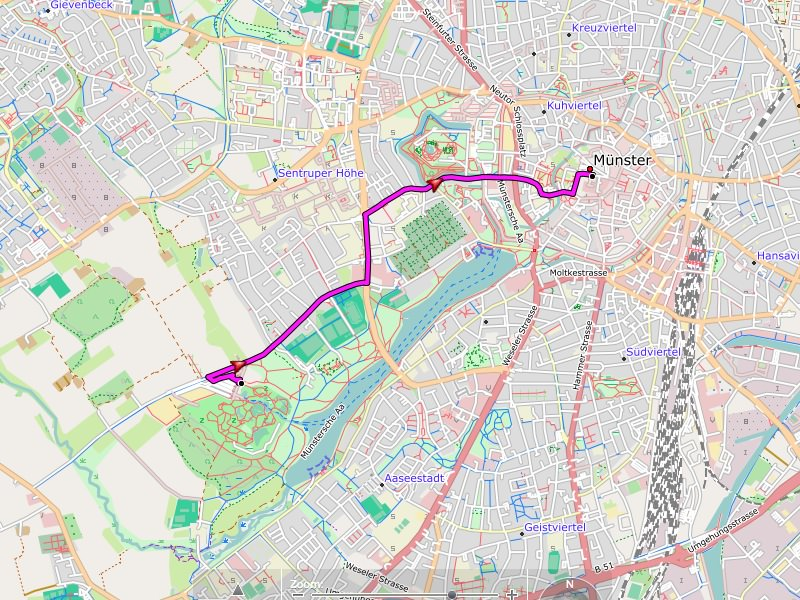

Automatische Routenberechnung (Routing):
Jede Straße / jeder Weg ist typischerweise nur für bestimmte Benutzungsarten vorgesehen. Diese Beschränkungen sind in der Freizeitkarte hinterlegt. Die automatische Routenberechnung
versucht diese Randbedingungen zu berücksichtigen. Die Route selbst wird durch BaseCamp oder das GPS-Gerät berechnet.
Beim Routing wird generell unterschieden zwischen:
- Autofahrer
- Radfahrer
- Fußgänger

Erforderliche Routingeinstellungen (BaseCamp, GPS-Gerät):
Die Routing-Logik der Freizeitkarte erfordert keine besonderen Einstellungen. Bitte je nach Fortbewegungsart, StVO und Vorlieben einstellen.
Informationen zum besseren Verständnis des Routings:
- Autobahn: ist gesperrt für Radfahrer und Fußgänger
- Unbefestigter Straße: Straße mit unbefestigter Oberfläche (verdichtete Decke, Schotter, ...), Feld- und Waldweg der Klassen 2-5
- Feld- und Waldweg: ist generell für Autofahrer gesperrt
- private Straße oder Weg: ist generell vom Routing ausgeschlossen
- (Berg-)Wanderweg: Wege der Kategorien 4-6 sind grundsätzlich vom Routing ausgeschlossen (Ausnahme: FZK Alpen)
- Klettersteige sind immer vom Routing ausgeschlossen
Anmerkungen:
- "Unbefestigte Straßen" sind typischerweise nur für geländetaugliche Fahrzeuge geeignet.
- Die Routingeinstellungen sind sowohl für BaseCamp als auch im GPS-Gerät vorzunehmen.
- Je kürzer die Strecke desto "besser" das Routingergebnis (z.B. Teilstrecken <30 km).
- Straßenbarrieren wie z.B. Poller werden derzeit für das Routing nicht berücksichtigt.
Empfehlung für BaseCamp 4.x und GPS-Gerät:
- Verwendung der Profile für "Auto", "Fahrrad" und "Zu Fuss"
Hinweis:
Die Routenberechnung befindet sich im Status "Erprobung" und kann in einigen Fällen inkorrekt oder unzureichend sein. Jede Routenberechnung sollte deshalb durch den Benutzer kritisch
geprüft werden.